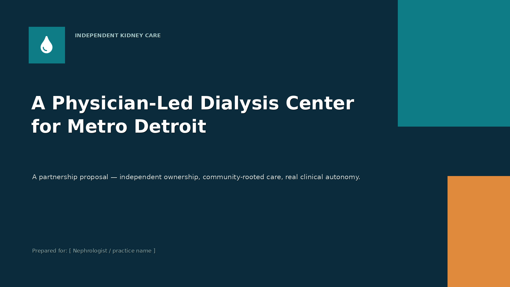
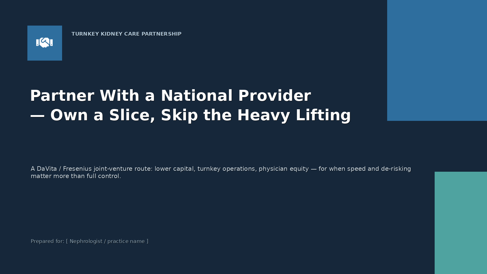

Metro Detroit · Physician-led dialysis
Independent ownership. Community-rooted care. Real clinical autonomy — not a minority slice of a national chain.
The data
Sources: USRDS 2025 · National Kidney Foundation · U.S. Census
The model
The nephrologist is the unlock. You bring the patient panel, the medical directorship, and the clinical credibility that no operator or investor can replicate. An experienced, community-rooted operator runs the floor. An investor funds and structures the deal.
One independent center, run the right way. Real equity in a business you help shape — not a prescribed minority slice of a chain's P&L. The structure is yours to influence from day one.
MWBE eligibility requires majority operator ownership — and that is only possible in the independent route. A DaVita or Fresenius turnkey JV cannot offer it.
Pitch materials

Option A
Physician-led JV: full equity, clinical control, MWBE eligibility. The primary pitch.

Option B
DaVita / Fresenius partnership: lower operational lift, less equity and control. The alternative path.
Access modeling
Demand is modeled from demographics; clinic counts are editable placeholders — replace with Medicare's facility directory for exact figures.
Get in touch
Not legal or financial advice. Physician-ownership dialysis JVs must be structured under Stark Law / Anti-Kickback safe harbors with qualified counsel.